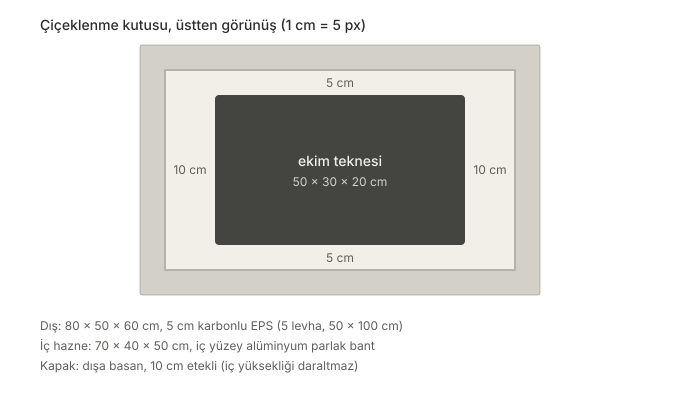

İlk kutum çiçeklenme (hasat) kutusu. Hedefi 13–17 °C ve %60–70 nem tutmak. Bunun için iyi yalıtılmış, içi ışığı yansıtan ve içindeki havanın ekim teknesinin etrafında dönebildiği bir kutu gerekiyordu.

Malzemeler
- 5 cm kalınlığında karbonlu EPS strafor, 5 levha, 50 × 100 cm. Karbonlu (gri) EPS aynı kalınlıkta beyaz EPS'ten daha iyi yalıtıyor.
- Strafor yapıştırıcı ve silikon tabancası.
- Alüminyum parlak bant: iç yüzeyin tamamına. Hem LED ışığını yansıtıyor hem de strafora nem geçmesini engelliyor.
- Maket bıçağı ve metre.
- 50 × 30 × 20 cm siyah plastik ekim teknesi (sıva teknesi, yaklaşık 30–35 L).
- Peltier bloğunu duvara sabitlemek için 1 m tij (saplama) ve bağlantı elemanları.
Ölçüler
Dış ölçü 80 × 50 × 60 cm, iç hazne 70 × 40 × 50 cm. Kapak, iç yüksekliği daraltmamak için kutunun üstüne basan, 10 cm etekli bir "ayakkabı kutusu" kapağı. Etek kapağın kaymasını önlüyor ve kapak kenarından hava kaçağını azaltıyor.
Ekim teknesi iç haznenin ortasına oturunca iki ucunda 10'ar cm, yanlarında 5'er cm boşluk kalıyor. Bu boşluk küçük bir rüzgâr tüneli gibi çalışıyor: hava teknenin etrafında dönebiliyor, köşelerde durgun ve nemli hava cepleri oluşmuyor.
Öğrendiklerim
- Strafor kutu sızdırmaz değil. Kapak kenarlarından ve birleşim yerlerinden hava kaçıyor. Bunu soğutma gücünü hesaplarken hesaba katmak gerekiyor.
- Güç kaynağını ve açık kablolu elektroniği doğrudan strafor üstüne koymamak lazım; strafor yanıcı. Altına yanmaz bir zemin koyacağım.